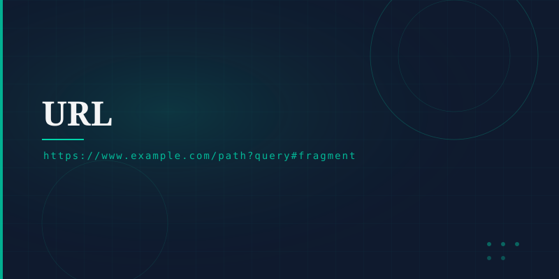

What is a URL?
A Uniform Resource Locator (URL) is the address used to access a specific resource on the Internet. Every web page, image, video, and file on the Web has its own unique URL. URLs follow a standardised format defined by RFC 3986.
Anatomy of a URL
https://www.example.com:443/path/page.html?id=5#section
https:// — the protocol to use (HTTP, HTTPS, FTP).
www.example.com — the host, resolved by DNS.
:443 — optional; defaults to 80 (HTTP) or 443 (HTTPS).
/path/page.html — the specific resource location on the server.
?id=5 — parameters passed to the server.
#section — a specific part of the page.
URLs vs URIs vs URNs
A URL is a type of URI (Uniform Resource Identifier). While all URLs are URIs, not all URIs are URLs. A URN (Uniform Resource Name) identifies a resource by name without describing how to find it — for example, an ISBN number for a book.
Importance
URLs are the hyperlink foundation of the World Wide Web. They enable bookmarking, sharing, search engine indexing, and the entire concept of navigating between pages. Their standardised structure ensures they work consistently across all browsers and servers.